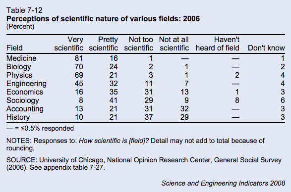

We are winning the war against transmissible disease.
Between 2000 and 2015, global malaria incidence fell by 37% and malaria mortality rates decreased by 60%. The per year rate of new HIV infections has declined 35% since 2000, and the number of AIDS-related deaths has dropped 42% since 2004. Tuberculosis incidence has fallen 18% since 2000, and the TB death rate dropped 47% between 1990 and 2015. Smallpox and polio have been nigh-eradicated; shigellosis, measles, and diphtheria are on their way out.
I do not want to downplay the significance of these diseases. Globally, the Big Three (malaria, HIV, and TB) and neglected tropical diseases are responsible for more suffering and death than just about anything else. If you want to make a difference, this is where your money and effort should go.
However, we are trending in the right direction [1]. Barring some unforeseen apocalypse, it seems likely that sanitation, education, and vaccination will continue to do their saintly work, and it is thus conceivable that all of the above diseases will one day be eliminated.
Compare:
CDC’s National Center for Health Statistics estimates that, based upon information collected for billing purposes, the number of times people were in the hospital with sepsis or septicemia (another word for sepsis) increased from 621,000 in the year 2000 to 1,141,000 in 2008. (Source)
Between 28 and 50 percent of people who get sepsis die.
Sepsis is the end game of infection. If your body fails to control an infection—any infection, be it influenza, a pimple, or fungal meningitis—then your immune system will freak out, your capillaries will leak, your organs will starve, and you will die.
If we’re so good at fighting transmissible disease, then why is sepsis on the rise?
Pneumonia is the most common cause of sepsis, and Streptococcus pneumoniae is the most common cause of pneumonia. Strep pneumonia is not very contagious: even if someone French-kisses sputum directly into your bronchioles you probably won’t get sick. Why not? Because the immune system absolutely crushes strep. It has to—Streptococcus pneumoniae is part of the normal human microbiota, and even if it doesn’t live in your throat, you are exposed to it frequently. Yes, some strains are worse than others, hence vaccination, but if you’re an eighty-five year old man on chemotherapy and you get strep pneumonia, the problem isn’t the bacterium, the problem is you.
This is the pattern that explains the future of illness. We’re not getting worse at fighting sepsis—the per-case mortality rate has actually decreased—but people are living longer, the immune system goes caput with age, and eventually we all run out of luck.
Which means that sepsis isn’t going away. The prevalence of fungal sepsis secondary to Candida albicans is increasing, thanks to our weakened immune systems, but we can’t eradicate C. albicans, it’s in our GI tract, it’s in our respiratory tract, it’s on our skin, and even if we did somehow eliminate it, another microbe would instantly take its place. Klebsiella is normal flora, so is Bacteroides, and no one even pretends that we can get rid of E. coli.Pseudomonas aeruginosa, the final boss of opportunistic pathogens, is “found in soil, water, skin flora, and most man-made environments throughout the world”, “thrives not only in normal atmospheres, but also in hypoxic atmospheres”, “uses a wide range of organic material for food”, and has “more than fifty [antibiotic] resistance genes.”This thing is going to survive the heat death of the universe.
It is useful to divide diseases between “self” and “other”: those diseases which are intrinsic to the machinery of the human body, and those which are caused by some external assault. Over the 20th century, medicine made great strides against the “other”: smallpox, polio, asbestos, lead. But sepsis is a disease of the self. Just as cancer results from a failure to control the normally cooperative cells of our body, sepsis results a failure to control our beneficial and commensal microbes. This sort of failure is inevitable as long as we face the inexorable decline of aging.
I’m not saying that we will never beat sepsis, but when we do, we will have changed what it means to be human.
Aside from the fact that we’re obligate aerobes, what makes breathing so special? Zen, Daoist, Sufist, Jainist, Tibetan, and Theravadan meditation techniques all incorporate “concentration on breath”, and modern mindfulness programs of the “dulcet British man tells you to let thoughts pass like clouds on a blue sky” variety implore the same. Nowhere in the definition of meditation (”nonjudgmental awareness”) is breath mentioned, so it’s curious that so many techniques have convergently evolved this focus.
Many lay resources (Wikipedia links to this website, which has a picture of a palm tree and uses Papyrus font) claim that that slow diaphragmatic breathing “maximizes the amount of oxygen that goes into the bloodstream.” I am skeptical. Healthy people have 97-99% oxygen saturation on room air, this number is limited by red blood cell binding, not ambient O2, and I intuitively doubt that wearing a nasal cannula has ever lead to transcendence. If anything, slow breathing increases CO2, which might benefit people with panic-induced hyperventilation, but was probably not the reason Gautama Buddha was big on controlled breathing.
Here’s a more plausible hypothesis:
During above tidal inhalation (as was seen in Hering Breuer’s reflex), stretch of lung tissue produces inhibitory signals in the vagus nerve, which ultimately shifts the autonomic nervous system into parasympatho-dominance, that results in a calm and alert state of mind. (Source)
If this is true, then deep breathing is essentially a body hack: pull on the vagus nerve down there, get some relaxation up here. A fringe argument could even be made that the “mindful detachment” part of meditation is a gimmick, and the real physiologic work is done by the breath itself.
Is this true?
Controlled breathing does seem to have a beneficial effect on pain, blood pressure, and mood during smoking cessation. (Interestingly, fast and slow deep breathing show similarresults.) However, this doesn’t prove that relaxation is the work of Las Vagus—it’s just as possible that the act of focusing on breath is what causes relaxation, not the lung stretch. Accordingly, some studies have looked at direct vagal stimulation, which has no effect or great promise depending on whom you ask. Let us also note that forms of mindfulness meditation that place less emphasis on breath have similar results to those that do.
I am not an expert in this field; I would be happy to hear from someone who is. My hunch is that deep breathing and meditation are two separate things which work, very, very well together. They work together because a) deep breathing has a chemical calming effect that makes it easier to control one’s thoughts, and b) because meditation is about focus, and it’s easier to focus on breath than anything else. If you meditate to ambient noise, there are a hundred fragments of noise from which to pick. If you meditate on sunrise or sunset, there are a thousand colors from which to choose. But if you close your eyes and focus on breath, then there is only one choice to make. Voluntary breath is the smallest unit of control that we can exert. Breath occurs on a single axis. In. Out. Breathe.
(content warnings: medical talk, conjecture, video of a sick kid)
I.
In a 2006 survey from the National Opinion Research Center, the public voted that medicine was the “most scientific” field, above biology, physics, or engineering.

When the survey surfaced in the rationalist community, it was immolated with criticism. From the relevant blog post:
There is simply no way that medicine is more scientific than physics. Perhaps I have a very narrow view of what science is (e.g., prediction & precision), but it’s an alternate universe where medicine is more scientific than physics, end of story.
And from the comments:
People want to believe that medicine is very scientific, and so they do – despite medicine being astoundingly unscientific in most of its aspects. Once again, we find that the data can be explained by referring to a simple fact: people are dumb.
I agree that (clinical) medicine is less scientific than physics, but I think it’s worth exploring what we mean by “scientific.” Is it the use of the scientific method, in particular, hypothesis testing? Is it a willingness to follow research evidence, even in the face in existing dogma? Or is “prediction and precision,” keenness of methodology, big machines, big samples, and tiny p-values? Because I think medicine has good excuses for all three definitions. Medicine may be irrational, but it’s irrational for perfectly rational reasons.
Lack of hypothesis testing.
The majority of medical research relies on correlation, which can be subtle, requiring a large sample size, and delayed, requiring longitudinal studies. (“If we control for everything else, people on aspirin have fewer heart attacks.”) The field of medicine is risk averse (something about doing no harm), some diseases are rare, and side effects are not always obvious. Hypothesis-testing is easier for physicists, Large Hadron Collider excepted.
Failure to follow the evidence.
If a doctor’s job was simply to treat the immediate disease, medicine might be closer to physics, but physicians are expected to perform a nebulous mix of “treat the current disease,” “avoid long term side effects,” “reduce costs,” “maintain patient satisfaction,” and “don’t get sued.” Prescribing antibiotics for a cold might not be an evidence-based treatment, but it’s an evidence-based way to improve patient satisfaction [1].
Insufficient precision.
Medicine does not prize epistemology above all else. No one would criticize physics research for being “too thorough,” but MD’s are constantly reminded that ordering too many diagnostic tests is a problem, both due to expense and because the tests themselves can harm the patient (e.g. radiation exposure). Some conditions (e.g. Alzheimer’s, multiple sclerosis) have no gold standard test other than autopsy, and many more are dangerous enough that treatment must be started before the workup is complete. Doctors are thus forced to use an gestalt of the patient’s story, the physical exam, diagnostic tests, and—cue theme song from House—clinical intuition.
“System 1” thinking is intuitive thinking – fast, automatic and emotional – and based on simple mental rules of thumb (“heuristics”) and thinking biases (cognitive biases) that result in impressions, feelings and inclinations.
In contrast, “System 2” thought processes are deliberately controlled, effortful, intentional, and require justification via logic and evidence. (Source)
Intuition, emotion, heuristics—I don’t blame academic scientists for getting the heebie-jeebies. Aside from medicine, no scientific field accepts intuition as a valid component of reasoning, and rightfully so. (“P doesn’t equal NP—you’ll just have to trust me on this one.”) But clinical intuition ain’t all that bad.
Within the 13 comorbid disease groups, and within the 15 basic categories of reason for admission, the physicians’ severity ratings were the most significant predictor of in-hospital mortality. Death rates rose from 0% in those rated as not ill, to 2% in the mildly ill, to 6% in the moderately ill, to 23% in the severely ill, and to 58% in those rated as moribund (p < 0.001). Sickness ratings also predicted time to death: mildly ill patients died after prolonged hospitalizations, while the moribund died shortly after admission.
The patients’ age, sex, race, the number of comorbid diseases or problems did not predict mortality. Patients with serious comorbidity (metastases, AIDS, or cirrhosis) had a higher mortality rate than other patients (p < 0.001); however, the severity ratings predicted outcomes within this group (p < 0.001) as well as among those without such serious comorbidity (p < 0.001). (Source).
The (limited) evidence shows that clinical intuition is consistently accurate for some conditions (e.g. viral warts), consistently inaccurate for others (e.g. neonatal jaundice), and good-but-not-perfect for chest pain. Intuition is probably best for big picture, “sick or not sick” decisions. At the top of this article, there’s a stock photo of a kid who is clearly not ill. How about this kid?
Sick.
You can come up with retrospective reasons why this viral video star looks ill—decreased activity, costal retractions, increased work of breathing—but within six seconds of starting the video, you knew that something was wrong.
A total of 3981 children were included in the study, of which 31 were admitted to hospital with a serious infection (0.78%). Accuracy of signs and symptoms was fairly low…The sign paramount in all trees was the physician’s statement ‘something is wrong’. (Source)
The most prominent diagnostic signs in seriously ill children were changed behaviour, crying characteristics and the parents’ opinion…The parents found this illness different from previous illnesses, because of the seriousness or duration of the symptoms, or the occurrence of a critical incident. Classical signs, like high fever, petechiae or abnormalities at auscultation were helpful for the diagnosis when they were present, but not helpful when they were absent. (Source)
Let me be clear: I am not arguing that intuition is a mystical force beyond human comprehension, and I’d rather die than endorse dualism. I just saying that human beings are good at recognizing patterns, and that recognition of a pattern often occurs before we can elucidate the individual data points.
Example: a 45 year old caucasian male with history of MI and stroke is is brought in by ambulance with confusion, slurred speech, and ataxia. Last seen normal yesterday. In the ED, patient is nonverbal but will open his eyes briefly in response to painful stimuli. Exam otherwise unremarkable, blood sugar normal to medics, vital signs within normal limits.
What’s the missing piece? What does the patient look like?
Because if the patient has an NPR t-shirt and three iPad-wielding family members at the bedside, the treatment plan is very different than if he has poor dentition and “ONLY GOD CAN JUDGE ME” tattooed on his chest. I don’t think there’s a study on teardrop tattoos as a diagnostic sign, nevertheless, every time I’ve seen the latter presentation, the ER doctor has said “Oh, must be heroin,” ordered the antidote, and watched the guy recover within fifteen minutes [2].
And clinical judgment is as useful to determine “not sick” as it is for “sick.” Patients lie, exaggerate, overreact, and get things wrong. I don’t know of any protocols for the maintenance of an effective bullshit detector, but if an ER doc doesn’t know the difference between a 10/10 headache and a “10/10″ headache, then he’s going to spend a lot of time and money treating nonexistent illness.
My point is not that intuition should supplant methodical reasoning, but that it is a necessary adjunct. Human beings are not computers, and our calculations are slow and imperfect. Medicine may not be scientific, but trying to be purely analytic won’t necessarilymake medicinebetter. We don’t need to abandon intuition, we need to get better at it.
And so suppose there was a field of study that required researchers to make predictions about other human beings. Suppose these researchers had to guess not only sick or not sick, but happy or unhappy, thoughtful or bored, loyal or selfish, attracted or ambivalent. Suppose these researchers had to make these assessments rapidly and off of limited information: no control group, limited sample size, just brief snippets of observational data. Would this field be closer to medicine or physics?
In a nationally representative sample, higher patient satisfaction [the top 25%] was associated with less emergency department use but with greater inpatient use, higher overall health care and prescription drug expenditures, and increased mortality.
n.b: Everything is terrible.
[2]. Pedantic note: the classic giveaways for heroin OD are track marks and constricted pupils, but the last overdose patient I saw had no obvious track marks and normal pupils. Presumably he had smoked methamphetamine, which dilates pupils, prior to OD’ing on heroin.